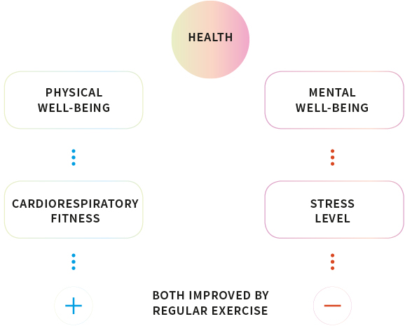

Overview
More people nowadays are engaged in office jobs and become increasingly sedentary. According to a 2018 study, office based workers typically spend 70-85% sitting. A lack of physical activity has been one of the leading causes of preventable death worldwide. The challenge of this project is to design a health-care product for people with a sedentary lifestyle.
My Role
Product Design
Year
2018 (3 months)
As-Is Map
After conducting several interviews, I made an As-Is Map and found key opportunities.
SECONDARY RESEARCH
Indicator for Health: Trace Elements in Sweat
One of the most important indication of the physical well-being is cardiorespiratory fitness, while the stress level indicates the mental health. The trace elements in our sweat can be the idicator for both cardio and mental health.


Solution: Sweat Patch
01 Apply the Patch, warm up!

02 Run!
03 Collect the patch after running.
04 Compare your patches.

Mechanism & Interface